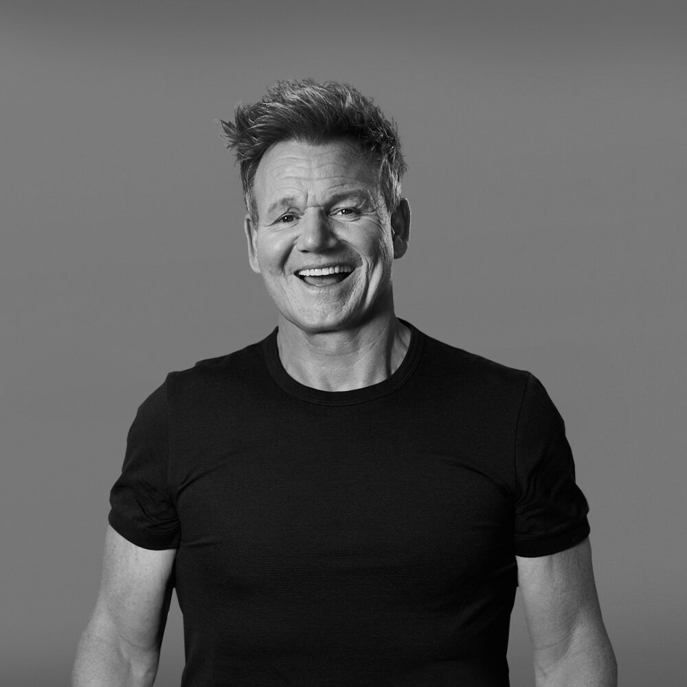

Learning to tell stories that people want to stop for.
Abey Shawn Daniel
I hold a Bachelor’s degree in Mechanical Engineering and am currently completing a Master’s in Marketing Management. I am building an understanding of how brands find the right people, create meaningful content and measure what works.
What I enjoy most is the blend of creativity and strategy. A strong campaign is not just visually appealing — it starts with knowing the audience and gives them a reason to care.
BACKGROUND
Mechanical Engineering graduate
CURRENT STUDY
Master’s in Marketing Management
INTERESTS
Music, gymming & good community
OFF THE CLOCK
Occasional drinks with great people
A background in engineering has taught me to value problem-solving; marketing lets me combine that thinking with creativity and people.
02 / ANALYSIS5 MIN READ
GR°
DECODING AN INFLUENCER
Gordon Ramsay: from fierce TV chef to multi-platform teacher.

Gordon Ramsay
How a recognisable persona, useful content and smart collaborations help one chef speak to more than one audience.
The starting point: a powerful brand persona
Ramsay’s well-known television persona — demanding, direct and highly skilled — gives his content instant recognition. That distinct voice helps people identify a Gordon Ramsay clip in a crowded feed. But his digital presence also shows a more approachable side: a chef who teaches techniques, reacts to food trends and shares family-friendly moments.
Strategy 01 — make expertise useful
On YouTube, Ramsay turns professional knowledge into accessible, repeatable value. Videos such as Cooking Classics with Gordon Ramsay package cooking guidance around familiar dishes and clear demonstrations. This is content marketing: the viewer receives practical value first, while Ramsay’s credibility and wider food brand stay top of mind.
His content does not only say “I am an expert”; it lets viewers experience that expertise in their own kitchens.
Strategy 02 — borrow attention through collaborations
Ramsay regularly appears with celebrities, athletes and online creators. These collaborations use audience overlap: a guest introduces Ramsay to people who already follow them, while Ramsay offers the guest his food expertise and entertainment value. It is a practical example of cross-promotion, making the content more discoverable than a standard recipe video.
AUDIENCE SHIFT
Who is he talking to now?
His original audience was largely TV viewers who came for restaurant drama and elite-chef authority. Today, his ecosystem reaches home cooks, food fans, aspiring chefs, short-form viewers and families. The official channel’s 9 million subscriber milestone has since grown to roughly 22 million followers on YouTube, while his linked Instagram and TikTok accounts create additional entry points.
Strategy 03 — expand without losing the core
Ramsay expands horizontally across platforms and formats. Long YouTube videos serve viewers wanting instruction or entertainment; fast, trend-aware clips suit social feeds; premium cooking classes and restaurant experiences provide deeper engagement. This is a multi-channel, funnel-style strategy: entertaining content builds reach, educational content builds trust, and experiences such as masterclasses offer a route to action.
The key lesson is consistency. Although the tone changes by platform, the promise stays recognisable: high standards, food knowledge and a memorable personality.
MARKETING TAKEAWAY
Influence grows when expertise is packaged for different audiences — and when collaboration makes that expertise visible to new communities.
Audience figures and platform observations checked 27 August 2026. “Roughly 22 million” refers to the visible follower count displayed with the official Gordon Ramsay YouTube channel in search results; figures can change over time.